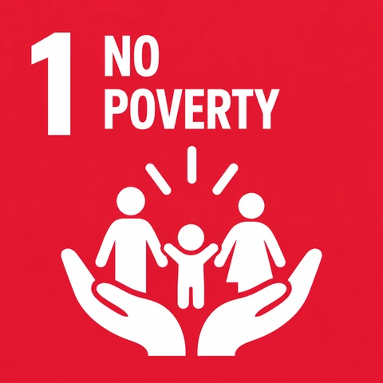

ESG LEADERSHIP, DRIVEN BY INNOVATION
Organizations for a sustainable future.
We are your strategic partner in shaping a sustainable future, combining deep ESG expertise with advanced technology to build tailored roadmaps that strengthen resilience and create measurable impact.

GLOBAL GOALS
Sustainability goals we work around.
Scroll or drag to explore the goals.
ABOUT US
In the Mind of i-ESG Advisory
Discover our story and what makes us unique.
In the Mind of i-ESG Advisory: “We are more than consultants.”
We are your strategic partner in shaping a sustainable future. Our approach combines deep ESG expertise with cutting-edge AI technologies to design tailored sustainability roadmaps, driving long-term business resilience and meaningful impact.
We offer an expansive suite of services, including advanced sustainability consulting, strategic ESG and climate risk management, carbon market advisory, and in-depth environmental footprint analysis. With our tailored solutions, we optimize ESG ratings and deliver precision, agility, and unmatched efficiency.
Empowering your business to lead in today’s fast-evolving sustainability landscape.
Our strength lies in our ability to navigate and anticipate the ever-evolving sustainability landscape, transforming insights into real-world strategies. We enable our clients to strategically manage risks, unveil discerning opportunities, and foster sustainable value for their stakeholders and the environment.
Learn more about i-ESG Advisory →OUR CORE VALUES
What drives us forward.
M
Our Mission
To empower our clients with innovative solutions, guiding their sustainability journey and positioning them as leaders in responsible, resilient business practices.
V
Our Vision
We envision a world where ESG principles and sustainable stewardship are embedded in every organization.
232Clients
521Projects
1463Hours Of Support
15Hard Workers

01
ESG Expertise Meets Technology
Comprehensive Services. Advanced Tools.

02
Tailored Solutions for Every Sector
One Platform. Infinite Possibilities.

03
Trusted Partner for Measurable Impact
Purpose-Driven. Scalable. Built on Trust.
SERVICES
We provide the best service with our innovative tools.

01
Sustainability and Economic Consultancy
Strategic, Tailored, and Holistic Approaches
Explore service →

04
Carbon Market Advisory
Strategic Guidance for Emissions Reduction and Value Creation
Explore service →
06
ESG Rating & Sustainability Assessment
Beyond Compliance, Towards Sustainable Excellence
Explore service →08
Strategic Decarbonization Pathways
Enabling Science-Driven Net Zero Transformations
Explore service →
09
RJC Compliance Support
Enabling Jewelry Sector Players to Align with the Responsible Jewellery Council (RJC) Standards
Explore service →THE i-ESG WAY
Our Approach & Commitments to a Sustainable Future.
We lead with insight, innovation, and unwavering integrity, shaping a sustainable future.
Client-Centric Precision
We handle the complexities, providing tailored solutions that make your sustainability journey seamless, aligning with your goals and easing the path to a sustainable future.
Holistic Approach
We adopt a comprehensive, systems-thinking framework, addressing the full spectrum of environmental, social, and governance factors. By integrating these interconnected dimensions, we ensure that our strategies drive systemic, long-term sustainability.
Real Impact
We are dedicated to delivering measurable, lasting ESG outcomes, ensuring that every action leads to tangible, positive change.
Integrity
We uphold the highest standards of transparency and ethical conduct, fostering trust in every partnership.
Innovation with Purpose
We embrace the latest advancements and continuously evolve our strategies. Our ESG solutions remain adaptable, resilient, and future-proof so your sustainability initiatives can lead in a changing world.
Collaborative Partnerships
We believe in a shared vision for a sustainable future. By working hand in hand with our partners, we foster long-term relationships and co-create bespoke, impactful solutions that deliver lasting mutual success.
NEWS
Latest news regarding sustainable knowledge.


CONTACT
Let’s shape a more sustainable future.
i-ESG Advisory specializes in sustainability consulting. Our mission is to help businesses achieve their sustainability goals through innovative solutions and expert advice.
Location
Tower 9W, First Floor, Sama Towers Ring Road, Maadi